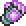

Magic
Magic casts from staves, tomes and magic guns and runs on mana, so mana regeneration gear matters as much as damage.
Markers: † risky to get · C crowd control · + support · ≤ has upgrades · * tedious to get · ν needs the Void subclass · Ω use together · Δ changed by Calamity · ≈ placed by rarity, may be a stage off · italic = Revengeance Mode or higher. Numbers in brackets are base damage. All-class armor follows the class sets on each armor line.
Pre-Hardmode
1 Pre-Eye of Cthulhu
Bosses The Grand Thunder Bird
The Grand Thunder Bird King Slime
King Slime Desert Scourge
Desert Scourge Giant Clam
Giant Clam Lepus
Lepus Eye of Cthulhu
Eye of Cthulhu
- Weapons
 Blue Jellyfish Staff
Blue Jellyfish Staff Dark Wave /
Dark Wave /  Vessel Buster
Vessel Buster Diamond Staff
Diamond Staff Fizzle Star
Fizzle Star Frigid Javelin ν *
Frigid Javelin ν * Geostorm ν
Geostorm ν Gold Arc Staff ν /
Gold Arc Staff ν /  Platinum Soul Staff ν
Platinum Soul Staff ν Ice Cube
Ice Cube Pink Jellyfish Staff C
Pink Jellyfish Staff C Pistol Shrimp
Pistol Shrimp Storm Spell
Storm Spell Thorium Staff
Thorium Staff Veering Wind C
Veering Wind C Vilethorn C /
Vilethorn C /  Crimson Rod C +
Crimson Rod C +
- Armor
 Diamond Robe /
Diamond Robe /  Mystic Robe *
Mystic Robe * Magic Hat * /
Magic Hat * /  Wizard Hat *
Wizard Hat * Silk armor
Silk armor
All-class Ancient Shadow armor *
Ancient Shadow armor * Frigid armor *
Frigid armor * Gold armor /
Gold armor /  Platinum armor
Platinum armor Lead armor
Lead armor Thorium armor
Thorium armor Vespera armor ν
Vespera armor ν
- Accessories
 Band of Starpower ≤
Band of Starpower ≤ Mana Bauble
Mana Bauble Sapphire Ring
Sapphire Ring Wizard Shoes
Wizard Shoes
- Buffs
 Mana Potion
Mana Potion
Permanent Mana Crystal
Mana Crystal Arcane Crystal *
Arcane Crystal *
2 Pre-Eater of Worlds / Brain of Cthulhu
Bosses Glowmoth
Glowmoth Crabulon
Crabulon
 Eater of Worlds or Brain of Cthulhu
Eater of Worlds or Brain of Cthulhu
- Weapons
 Aquamarine Staff
Aquamarine Staff Eighth Plague Staff
Eighth Plague Staff- Fizzle Star
- Frigid Javelin ν
- Geostorm ν
- Gold Arc Staff ν / Platinum Soul Staff ν
 Gray Zapinator † *
Gray Zapinator † * Illuminant Staff
Illuminant Staff Magick Staff +
Magick Staff + Shadowflame Staff
Shadowflame Staff Sparkling Empress C
Sparkling Empress C- Vilethorn C / Crimson Rod C +
- Support
 Brittle Star Staff (defensive)
Brittle Star Staff (defensive)
- Armor
- Diamond Robe Ω / Mystic Robe Ω *
 Jungle armor
Jungle armor- Magic Hat Ω * / Wizard Hat Ω *
- Silk armor
 Victide armor
Victide armor
All-class- Ancient Shadow armor *
- Frigid armor
- Gold armor / Platinum armor
- Lead armor †
- Vespera armor ν
- Accessories
 Glow Spores *
Glow Spores *- Mana Bauble
 Mana Flower ≤
Mana Flower ≤ Mana Regeneration Band ≤
Mana Regeneration Band ≤- Sapphire Ring
- Wizard Shoes
- Buffs
 Magic Power Potion
Magic Power Potion Mana Regeneration Potion
Mana Regeneration Potion- Mana Potion
3 Pre-Hive Mind / Perforators
Bosses Queen Jellyfish
Queen Jellyfish Viscount
Viscount
 The Hive Mind or The Perforators
The Hive Mind or The Perforators
- Weapons
 Demon Scythe
Demon Scythe Dreaming Lamp ν
Dreaming Lamp ν Flare Bolt
Flare Bolt- Gray Zapinator Ω
 Hellwing Staff
Hellwing Staff- Illuminant Staff
 Inferno Staff
Inferno Staff Photon Geyser *
Photon Geyser * Space Gun Ω
Space Gun Ω The Cauldron
The Cauldron
- Support
- Brittle Star Staff (defensive)
 Slime Gun +
Slime Gun +
- Armor
- Jungle armor
 Meteor armor Ω
Meteor armor Ω
All-class Crimson armor
Crimson armor Depth Diver's armor
Depth Diver's armor Shadow armor
Shadow armor
- Accessories
- Glow Spores *
- Mana Flower ≤
- Mana Regeneration Band ≤
- Sapphire Ring
- Wizard Shoes
- Buffs
- Magic Power Potion
- Mana Regeneration Potion
4 Pre-Skeletron
Bosses Queen Bee
Queen Bee Putrid Pinky
Putrid Pinky Deerclops
Deerclops Pharaoh's Curse
Pharaoh's Curse Skeletron
Skeletron
- Weapons
 Cursed Spear Storm
Cursed Spear Storm- Demon Scythe
- Dreaming Lamp ν
 Goopwood Staff
Goopwood Staff- Gray Zapinator Ω
- Hellwing Staff
- Photon Geyser *
 Putrid Eye ν
Putrid Eye ν Tradewinds
Tradewinds Weather Pain
Weather Pain
- Support
 Aestheticus +
Aestheticus +- Brittle Star Staff (defensive)
- Armor
 Aerospec armor
Aerospec armor Cursed armor ν
Cursed armor ν- Jungle armor
- Meteor armor Ω
All-class- Crimson armor
- Depth Diver's armor
- Shadow armor
- Accessories
 Glow Jelly *
Glow Jelly *- Mana Flower ≤
- Mana Regeneration Band ≤
- Wizard Shoes
 Voiden Bracelet ν
Voiden Bracelet ν
- Buffs
- Magic Power Potion
- Mana Regeneration Potion
5 Pre-Slime God
Bosses Turkor the Ungrateful
Turkor the Ungrateful Granite Energy Storm
Granite Energy Storm Buried Champion
Buried Champion The Slime God
The Slime God
- Weapons
 Aqua Scepter
Aqua Scepter Black Anurian
Black Anurian Book of Skulls
Book of Skulls Champion's Bomber Staff
Champion's Bomber Staff- Demon Scythe
- Dreaming Lamp ν
 Eel-rod
Eel-rod Energy Projector
Energy Projector Feather Storm
Feather Storm Flamelash
Flamelash High Tide
High Tide- Photon Geyser *
- Putrid Eye ν
- Support
- Aestheticus +
- Brittle Star Staff (defensive)
- Armor
- Aerospec armor
- Cursed armor ν
- Jungle armor
All-class Darksteel armor
Darksteel armor- Depth Diver's armor
 Granite armor
Granite armor
- Accessories
- Glow Jelly *
- Mana Flower ≤
- Mana Regeneration Band ≤
- Wizard Shoes
- Voiden Bracelet ν
- Buffs
- Magic Power Potion
- Mana Regeneration Potion
6 Pre-Wall of Flesh
Bosses The Excavator
The Excavator The Advisor
The Advisor Star Scouter
Star Scouter Wall of Flesh
Wall of Flesh
- Weapons
 Abyssal Tome
Abyssal Tome Arc Staff Mk2 ν
Arc Staff Mk2 ν- Champion's Bomber Staff
 Code Corrupter
Code Corrupter Crescent Staff ν
Crescent Staff ν- Dreaming Lamp + ν
- Energy Projector
 Magma Concentrator ν
Magma Concentrator ν Night's Ray
Night's Ray Particle Whip
Particle Whip- Photon Geyser *
- Putrid Eye ν
- Support
- Aestheticus +
- Brittle Star Staff (defensive)
- Armor
- Cursed armor ν
 Statigel armor
Statigel armor
All-class- Darksteel armor
- Depth Diver's armor
- Accessories
- Glow Jelly *
- Mana Flower ≤
 Mana Polarizer
Mana Polarizer- Mana Regeneration Band ≤
 Starbelt
Starbelt- Wizard Shoes
- Voiden Bracelet ν
- Buffs
- Magic Power Potion
- Mana Regeneration Potion
Hardmode
The modpack's wiki has not written Magic lists past Pre-Hardmode. From here the class picks come from the Calamity Mod wiki's class setups for the matching tier, so they cover vanilla and Calamity items only. The pack rebalances some of them, so check tooltips. All-class armor still comes from the modpack's wiki. Δ marks an item Calamity changes.
Every Hardmode stage uses the same buffs: Super Mana Potion; Magic Power Potion; Mana Regeneration Potion; Clairvoyance.
The "Other mods" lines are read from the pack's installed mod files: magic weapons and class armor from Thorium, Secrets of the Shadows, Catalyst and the other add-ons, placed at the stage their recipe or boss drop first becomes available under this pack's changes. Numbers are base damage after the pack's balance changes, and a boss name means the item drops there. ≈ marks an item placed by rarity alone, which can be a stage off.
7 Pre-Mechanical Bosses
Bosses Borean Strider
Borean Strider Fallen BeholderDreadnautilus
Fallen BeholderDreadnautilus Queen Slime
Queen Slime Cryogen
Cryogen

 first mechanical boss
first mechanical boss
- Weapons
 Shadowflame Hex Doll
Shadowflame Hex Doll Poseidon
Poseidon Nimbus Rod +
Nimbus Rod + Meteor Staff
Meteor Staff Death Valley Duster
Death Valley Duster Blood Thorn † *
Blood Thorn † *
- Armor
 Palladium armor
Palladium armor Cobalt armor Δ
Cobalt armor Δ
All-class Crystal Assassin armor
Crystal Assassin armor Dragon's armor /
Dragon's armor /  Flesh armor
Flesh armor Durasteel armor
Durasteel armor Mollusk armor †
Mollusk armor †
- Accessories
 Sorcerer Emblem
Sorcerer Emblem Arcane Flower
Arcane Flower- Mana Polarizer
 Permafrost's Concoction
Permafrost's Concoction
- Other mods' weapons
- Thorium
 Geomancer's Brush ≈ (90)
Geomancer's Brush ≈ (90) Cyclone (70)
Cyclone (70) Borean Fang Staff (58, Borean Strider)
Borean Fang Staff (58, Borean Strider) Prism Staff ≈ (55)
Prism Staff ≈ (55) Palladium Staff (48)
Palladium Staff (48) Vile Spitter ≈ (46)
Vile Spitter ≈ (46) Blood Clot Staff (45)
Blood Clot Staff (45) Cobalt Staff (40)
Cobalt Staff (40) Useless Staff ≈ (40)
Useless Staff ≈ (40) Heaven's Gate ≈ (38)
Heaven's Gate ≈ (38) Joyeuse (38)
Joyeuse (38) Lodestone Staff (34)
Lodestone Staff (34) Pyroclast Staff (33, Fallen Beholder)
Pyroclast Staff (33, Fallen Beholder) Night Staff ≈ (30)
Night Staff ≈ (30) Sea Foam Scepter (30)
Sea Foam Scepter (30) Frost Plague Staff ≈ (28)
Frost Plague Staff ≈ (28) Dragon's Breath (25)
Dragon's Breath (25) Dynasty War Fan (18)
Dynasty War Fan (18)
Infernal Arsenal Star Scepter (27)
Star Scepter (27)
- Other mods' class armor
- Thorium
 Naga-Skin set
Naga-Skin set White Knight set
White Knight set
8 Post-Mechanical Boss 1
Bosses Aquatic Scourge
Aquatic Scourge

 second mechanical boss
second mechanical boss
- Weapons
 Unholy Trident
Unholy Trident Snowstorm Staff C
Snowstorm Staff C R-GSS: Vulcan
R-GSS: Vulcan- Blood Thorn †
 Brimrose Staff
Brimrose Staff- Nimbus Rod +
- Armor
 Apprentice armor
Apprentice armor Mythril armor Δ
Mythril armor Δ Orichalcum armor
Orichalcum armor
All-class- Crystal Assassin armor
- Dragon's armor / Flesh armor
- Durasteel armor
- Mollusk armor †
- Accessories
- Sorcerer Emblem
- Arcane Flower
- Mana Polarizer
- Other mods' weapons
- Thorium
 Omega Blaster ≈ (118)
Omega Blaster ≈ (118) Dutchman's Avarice ≈ (60)
Dutchman's Avarice ≈ (60) Mythril Staff (56)
Mythril Staff (56) Devil Dagger ≈ (45)
Devil Dagger ≈ (45) Valadium Staff (44)
Valadium Staff (44) Plasma Staff ≈ (42)
Plasma Staff ≈ (42) Kinetic Knife ≈ (41)
Kinetic Knife ≈ (41) Orichalcum Staff (40)
Orichalcum Staff (40) Icy Gaze ≈ (38)
Icy Gaze ≈ (38) Static Prod ≈ (32)
Static Prod ≈ (32) Hydromancer's Catalyst ≈ (30)
Hydromancer's Catalyst ≈ (30)
Secrets of the Shadows Green Jellyfish Staff (70)
Green Jellyfish Staff (70) Incinerator Glove ≈ (33)
Incinerator Glove ≈ (33) Purple Jellyfish Staff (32)
Purple Jellyfish Staff (32) Biomass Bloom (24)
Biomass Bloom (24)
Clamity The Generator ≈ (77)
The Generator ≈ (77)
9 Post-Mechanical Boss 2
Bosses Brimstone Elemental
Brimstone Elemental

 third mechanical boss
third mechanical boss
- Weapons
- Unholy Trident
- R-GSS: Vulcan
- Nimbus Rod +
 Ion Blaster
Ion Blaster Frigidflash Bolt
Frigidflash Bolt- Brimrose Staff
- Armor
 Adamantite armor Δ
Adamantite armor Δ- Orichalcum armor
All-class- Crystal Assassin armor
- Dragon's armor / Flesh armor
- Durasteel armor
- Mollusk armor †
- Accessories
- Arcane Flower
- Sorcerer Emblem
- Mana Polarizer
- Other mods' weapons
- Thorium
 Wondrous Wand ≈ (86)
Wondrous Wand ≈ (86) Titanium Staff (60)
Titanium Staff (60) Snow White ≈ (56)
Snow White ≈ (56) Adamantite Staff (50)
Adamantite Staff (50) Bass Booster ≈ (48)
Bass Booster ≈ (48)
10 Pre-Polaris
Bosses Polaris
Polaris
- The Calamity guide has no tier between the third mechanical boss and Plantera. Carry stage 9's gear into Polaris and add stage 11 picks as they unlock.
- Other mods' weapons
- Thorium
 Hallowed Staff (48)
Hallowed Staff (48) Blackhole Cannon (40)
Blackhole Cannon (40)
Infernal Arsenal Luminant Tether (160)
Luminant Tether (160)
Secrets of the Shadows Tome of the Reaper (48)
Tome of the Reaper (48)
11 Pre-Plantera
Bosses Lich
Lich Calamitas Clone
Calamitas Clone Plantera
Plantera
- Weapons
 Venom Staff
Venom Staff Gleaming Magnolia
Gleaming Magnolia Shadecrystal Barrage
Shadecrystal Barrage SHPC Ω (loaded with Souls of Sight)
SHPC Ω (loaded with Souls of Sight)
- Armor
 Chlorophyte armor
Chlorophyte armor Brimflame armor
Brimflame armor Hallowed armor
Hallowed armor
All-class- Crystal Assassin armor
- Dragon's armor / Flesh armor
- Durasteel armor
- Mollusk armor †
- Accessories
- Arcane Flower
 Celestial Emblem
Celestial Emblem- Mana Polarizer
- Other mods' weapons
- Thorium
 Stalagmite (58)
Stalagmite (58) Chlorophyte Staff (51)
Chlorophyte Staff (51) Wither Staff (46, Lich)
Wither Staff (46, Lich) Twin's Ire (44)
Twin's Ire (44)
Secrets of the Shadows Azure Bombardment (40)
Azure Bombardment (40)
12 Pre-Golem
Bosses Leviathan and Anahita
Leviathan and Anahita Astrum Aureus
Astrum Aureus Ocram
Ocram Golem
Golem
- Weapons
 Alula Australis
Alula Australis Wasp Gun
Wasp Gun Undine's Retribution
Undine's Retribution- SHPC Ω (loaded with Souls of Sight)
 Rainbow Gun +
Rainbow Gun + Primordial Earth
Primordial Earth
- Armor
 Spectre armor
Spectre armor- Hallowed armor
- Brimflame armor
All-class Reaver armor
Reaver armor Clamitas armor
Clamitas armor Demon Blood armor
Demon Blood armor
- Accessories
- Celestial Emblem
- Arcane Flower
- Mana Polarizer
- Other mods' weapons
- Thorium
 Dark Flame ≈ (120)
Dark Flame ≈ (120) Razorlash ≈ (68)
Razorlash ≈ (68) Demon Blood Staff (62)
Demon Blood Staff (62)
Secrets of the Shadows Brachial Lance ≈ (68)
Brachial Lance ≈ (68)
Consolaria Eye of Ocram (62, Ocram)
Eye of Ocram (62, Ocram)
- Other mods' class armor
- Consolaria
 Phantasmal set
Phantasmal set Ancient Phantasmal set
Ancient Phantasmal set
13 Post-Golem
Bosses Forgotten One
Forgotten One
- Weapons
- Alula Australis
 Bat Scepter
Bat Scepter Charged Blaster Cannon
Charged Blaster Cannon- Rainbow Gun +
 Razorpine
Razorpine Wingman
Wingman
- Armor
 Hydrothermic armor
Hydrothermic armor- Brimflame armor
All-class- Reaver armor
- Clamitas armor
 Conduit armor
Conduit armor- Demon Blood armor
- Accessories
 Sigil of Calamitas
Sigil of Calamitas Eye of the Golem Δ
Eye of the Golem Δ Destroyer Emblem
Destroyer Emblem- Arcane Flower
- Other mods' weapons
- Thorium
 Lightning Staff ≈ (145)
Lightning Staff ≈ (145) Charon's Beacon (110)
Charon's Beacon (110) Erupting Flare ≈ (104)
Erupting Flare ≈ (104) Dark Grip ≈ (100)
Dark Grip ≈ (100) God Killer ≈ (88)
God Killer ≈ (88) P.L.G. 8999 ≈ (55)
P.L.G. 8999 ≈ (55) Super Plasma Cannon ≈ (50)
Super Plasma Cannon ≈ (50) Old God's Vision (45, Forgotten One)
Old God's Vision (45, Forgotten One) Time Gate (42)
Time Gate (42) Chromatic Fury ≈ (30)
Chromatic Fury ≈ (30) Dread Blaster (24)
Dread Blaster (24) The Black Staff ≈ (22)
The Black Staff ≈ (22)
Secrets of the Shadows Tangle Staff ≈ (80)
Tangle Staff ≈ (80) Revolution (48)
Revolution (48)
- Other mods' class armor
- Thorium
 Cryomancer's set
Cryomancer's set Titan armor with the Titan Headgear
Titan armor with the Titan Headgear
14 Pre-Lunar Events
Bosses Duke Fishron
Duke Fishron The Plaguebringer Goliath
The Plaguebringer Goliath Empress of Light
Empress of Light Lux
Lux Ravager
Ravager Lunatic Cultist
Lunatic Cultist
- Weapons
- Rainbow Gun +
 Plague Staff
Plague Staff Hematemesis
Hematemesis Bubble Gun
Bubble Gun Stellar Tune
Stellar Tune- Wingman
- Armor
- Hydrothermic armor
- Brimflame armor
All-class Terrarium armor (no focus)
Terrarium armor (no focus)- Conduit armor
- Accessories
- Sigil of Calamitas
- Eye of the Golem Δ
- Destroyer Emblem
- Arcane Flower
- Other mods' weapons
- Thorium
 Ancient Spark ≈ (120)
Ancient Spark ≈ (120) Ancient Frost ≈ (68)
Ancient Frost ≈ (68) Ancient Flame ≈ (32)
Ancient Flame ≈ (32)
Secrets of the Shadows Supernova Storm (60)
Supernova Storm (60) Stellar Shot ≈ (50)
Stellar Shot ≈ (50) Hyperlight Geyser (48)
Hyperlight Geyser (48)
15 Pre-Moon Lord
Bosses Astrum Deus
Astrum Deus Subspace Serpent
Subspace Serpent Astrageldon
Astrageldon Bereft Vassal
Bereft Vassal Moon Lord
Moon Lord
- Weapons
 Nebula Blaze
Nebula Blaze Nebula Arcanum
Nebula Arcanum Apoctosis Array C
Apoctosis Array C Star Shower
Star Shower The Swarmer Ω (with Hive Pack)
The Swarmer Ω (with Hive Pack)
- Armor
- Hydrothermic armor
All-class Astral armor
Astral armor- Terrarium armor (no focus)
- Accessories
- Sigil of Calamitas
 Hive Pack Ω
Hive Pack Ω- Eye of the Golem Δ
- Destroyer Emblem
- Arcane Flower
- Other mods' weapons
- Thorium
 Cat's Eye Great Staff ≈ (210)
Cat's Eye Great Staff ≈ (210) Terrarium Sage Staff (120)
Terrarium Sage Staff (120) Ancient Light (110, Lunatic Cultist)
Ancient Light (110, Lunatic Cultist) Teleologic Imposition ≈ (70)
Teleologic Imposition ≈ (70)
Infernal Arsenal Arckane Staff (110)
Arckane Staff (110)
Secrets of the Shadows Apocalypse (330)
Apocalypse (330) Dance of Death ≈ (110)
Dance of Death ≈ (110)
Catalyst Exalted Horizon (370)
Exalted Horizon (370)
Infernum Arid Battlecry (93, Bereft Vassal)
Arid Battlecry (93, Bereft Vassal)
Post-Moon Lord
Class picks still come from the Calamity Mod wiki. Stages 19 and 20 share one list because Calamity has no tier for the Primordials. Every stage uses Supreme Mana Potion, Magic Power Potion, Mana Regeneration Potion and Clairvoyance.
16 Pre-Providence
Bosses Profaned Guardians
Profaned Guardians Dragonfolly
Dragonfolly Providence
Providence
- Weapons
 Chronomancer's Scythe
Chronomancer's Scythe Genesis
Genesis Nucleosynthesis
Nucleosynthesis Nuclear Fury
Nuclear Fury Rouge Slash
Rouge Slash
- Armor
 Nebula armor Ω (with Nebula Mantle)
Nebula armor Ω (with Nebula Mantle)
All-class- Astral armor
- Terrarium armor (no focus)
- Accessories
- Sigil of Calamitas
- Arcane Flower
- Destroyer Emblem
 Nebula Mantle Δ Ω
Nebula Mantle Δ Ω
- Other mods' weapons
- Secrets of the Shadows

Continuum Collapse ≈ (120)
17 Pre-Polterghast
Bosses Ceaseless Void
Ceaseless Void Storm Weaver
Storm Weaver Signus
Signus Polterghast
Polterghast
- Weapons
 Purge Guzzler
Purge Guzzler Plasma Caster
Plasma Caster Nano Purge
Nano Purge Thorn Blossom
Thorn Blossom Volterion
Volterion
- Armor
 Tarragon armor
Tarragon armor Prismatic armor
Prismatic armor
All-class- Astral armor
- Accessories
- Sigil of Calamitas
- Destroyer Emblem
- Arcane Flower
18 Pre-Devourer of Gods
Bosses The Old Duke
The Old Duke The Devourer of Gods
The Devourer of Gods
- Weapons
 Dark Spark C
Dark Spark C Phantasmal Fury
Phantasmal Fury Shadowbolt Staff
Shadowbolt Staff Venusian Trident
Venusian Trident Vitriolic Viper
Vitriolic Viper
- Armor
- Prismatic armor
 Bloodflare armor Ω (with Heartreach or Photosynthesis Potion)
Bloodflare armor Ω (with Heartreach or Photosynthesis Potion)
All-class Omega Blue armor
Omega Blue armor
- Accessories
- Sigil of Calamitas
- Arcane Flower
- Buffs, added
 Heartreach Potion /
Heartreach Potion /  Photosynthesis Potion Ω
Photosynthesis Potion Ω
19 Pre-Primordials and 20 Pre-Yharon
Bosses The Primordials
The Primordials Yharon, Dragon of Rebirth
Yharon, Dragon of Rebirth
- Weapons
 Voltaic Climax
Voltaic Climax Tesla Cannon
Tesla Cannon Primordial Ancient †
Primordial Ancient † Omicron
Omicron Hyperdeath Rift Scepter
Hyperdeath Rift Scepter
- Armor
 Silva armor
Silva armor
All-class- Omega Blue armor
- Accessories
- Sigil of Calamitas
 Ethereal Talisman
Ethereal Talisman
- Other mods' weapons, stage 19
- Infernal Arsenal
 Miniaturized Requiem Engine (500)
Miniaturized Requiem Engine (500)
Clamity Ethereal Knives (190)
Ethereal Knives (190)
- Other mods' weapons, after the Primordials
- Thorium
 Devil's Claw (675)
Devil's Claw (675) Almanac of Agony (600)
Almanac of Agony (600)
21 Pre-Shadowspec
Bosses Primordial Wyrm
Primordial Wyrm Exo Mechs
Exo Mechs Supreme Witch, Calamitas
Supreme Witch, Calamitas XG-07 Mars
XG-07 Mars Goozma
Goozma
- Weapons
 Yharim's Crystal *
Yharim's Crystal * Void Vortex Ω (with The Amalgam)
Void Vortex Ω (with The Amalgam)- Primordial Ancient
 Aetherflux Cannon
Aetherflux Cannon- Hyperdeath Rift Scepter C
- After Supreme Calamitas
 Vehemence
Vehemence- Oblatory (buff from the Brimstone Witch)
- Armor
 Auric Tesla armor
Auric Tesla armor
All-class Gem Tech armor (after Draedon)
Gem Tech armor (after Draedon) Slippery Shogun armor (after Goozma)
Slippery Shogun armor (after Goozma)
- Accessories
- Sigil of Calamitas
- Ethereal Talisman
 The Amalgam Ω
The Amalgam Ω
- Other mods' weapons
- Hunt of the Old God
 Goomoire (1111)
Goomoire (1111) Crystal Gauntlets (400, Goozma)
Crystal Gauntlets (400, Goozma)
Infernum Illusioner's Reverie (720, Primordial Wyrm)
Illusioner's Reverie (720, Primordial Wyrm) Eye of Madness (448, Primordial Wyrm)
Eye of Madness (448, Primordial Wyrm)
Clamity Unicron (80)
Unicron (80)
- Other mods' class armor
- Thorium
 Pyromancer's set (needs Auric Bars in this pack)
Pyromancer's set (needs Auric Bars in this pack)
22 Endgame
Bosses Avatar of Emptiness
Avatar of Emptiness Nameless Deity of Light
Nameless Deity of Light
- Weapons
 Apotheosis
Apotheosis Eternity
Eternity Rainbow Party Cannon
Rainbow Party Cannon Staff of Blushie
Staff of Blushie- Sylvestaff
 The Dance of Light
The Dance of Light
- Armor
- Auric Tesla armor
All-class Demonshade armor
Demonshade armor- Gem Tech armor
- Slippery Shogun armor
- Accessories
- Ethereal Talisman
- Sigil of Calamitas
- Buffs, added
- Oblatory
- Other mods' weapons
- Infernal Arsenal
 Mystick Staff (1300)
Mystick Staff (1300)
Infernal Eclipse Nova Bomb
Nova Bomb Nebula Gigabeam
Nebula Gigabeam
No item on this page matches that filter.